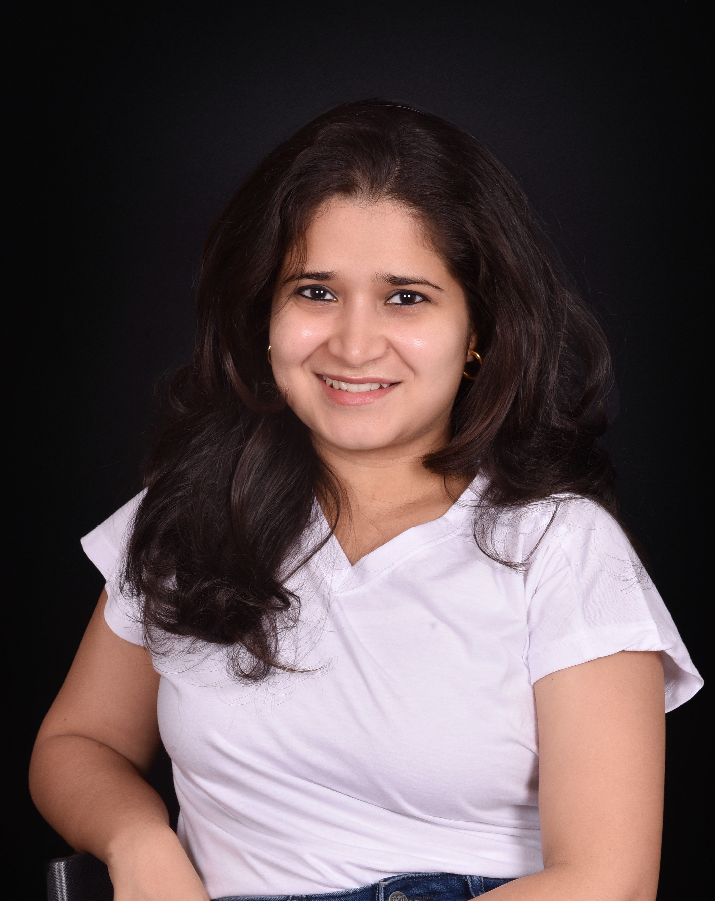

Journalism · Audio · Visual Storytelling
Shrabani
Chakraborty
Journalist & Creative Producer
A versatile storyteller working across print, radio, digital media and video, with a sharp eye for people, ideas and stories that matter.
About the storytellerPROFILE / 02

A curious mind, a clear voice
A passionate journalist and creative producer with a keen eye for compelling narratives. Shrabani's media journey spans print journalism, radio production, digital storytelling and editorial production.
She specializes in crafting engaging content that resonates across platforms, combining thoughtful research with authentic storytelling and impactful communication.
“Stories that matter. Voices that count.”
4+years across journalism, radio and media
5languages spoken or studied
4featured published articles
15+podcast and video pieces
Skills
What I bringWriting & StorytellingResearch & InvestigationInterviewingVideo ProductionOn-Camera PresenceMultilingual SkillsAdaptabilityCanvaMedia ToolsPublic Speaking
Languages
Communication- English
- Hindi
- Bengali
- Odia
- Kannada (Beginner)
Professional journeyEXPERIENCE / 03
Experience
Editorial · Production · Reporting
THOMSON REUTERS
EMEA Sub Editor
July 2025 – June 2026 · Bengaluru, Karnataka
- Edited and wrote pharma stories while supporting end-to-end editorial production workflows.
INDIGO 91.9 FM
Executive Producer and Creative Writer | Consultant
June 2024 – May 2025 · Bengaluru, Karnataka
- Curated and produced content for The Morning Show; delivered voice-overs and conducted outdoor broadcasts.
- Scripted and created jingles for various clients.
ARCHETYPE
Associate Consultant
January 2024 – June 2024 · Bengaluru, Karnataka
- Content writing, research, press releases and media pitches.
- Worked with B2B technology clients including Kyndryl, Pegasystems and Genesys Cloud Services.
RED FM
Creative Producer (Programming)
May 2023 – September 2023 · Bengaluru, Karnataka
- Created ad copies and video scripts while managing production and outdoor broadcasts, including interviews with Bollywood and sports personalities.
THE NEW INDIAN EXPRESS
Feature Writer (Intern)
April 2022 – May 2022 · Bengaluru, Karnataka
- Wrote feature stories for the City Express and interviewed startup founders, co-founders and key team members.
THE HINDU
Reporter Intern
March 2022 – April 2022 · Bengaluru, Karnataka
- Wrote news articles to The Hindu's editorial standards, conducting research and fact-checking; participated in editorial meetings and story assignments.
Learning the craftEDUCATION / 04
Education
Academic foundationCOMMITS
PG Diploma in Journalism and Audio-Visual Communication
September 2023 · Bengaluru, Karnataka · 80%
ACHARYA INSTITUTE OF GRADUATE STUDIES
B.A. in Triple Majors: Journalism, Psychology, Literature
October 2021 · Bengaluru, Karnataka · CGPA: 8.3
Coursework
Core studies- Reporting
- Print Journalism
- TV Journalism
- Editing
- Radio
- Marketing
- Proofreading
Approach
In practiceFrom a newsroom assignment to a live radio segment, Shrabani brings research, clarity and a human lens to every format.
Online presence
Find the work
Stories in printPUBLISHED WORK / 05
Featured articles
Read the work
India sets the stage for US obesity price war · Reuters Breakingviews
India's growing obesity problem has created a new battleground for weight-loss drugmakers. Novo Nordisk's lower-priced Ozempic launch offers a glimpse of the price competition that could intensify in the United States when key patents expire.
Open article · breakingviews.comSwitch off · The New Indian Express
On burnout, sleep loss and screen overuse, and how companies are responding to digital fatigue in the era of work from home.
Open article · newindianexpress.comPortion of Mylasandra lake makes way for road widening · The Hindu
A report on a Bengaluru lake being used for road widening and the concerns raised by local residents.
Open article · thehindu.comThe pandemic took a huge toll on us · The Hindu
How lockdowns affected children with Autism Spectrum Disorder and their caregivers through the closure of schools, parks and therapy services.
Open article · thehindu.comVideo story
On locationCovered the Frazer Town Ramzan Food Festival 2023. More bylines and reporting work are available through the MuckRack portfolio.
Audio & videoMEDIA WORK / 06
Video interviews
Watch on YouTube
Podcast episodes
Listen on YouTube
Let’s make something worth hearing
Good stories
stay with us.
For editorial collaborations, creative production, interviews and media opportunities, get in touch.